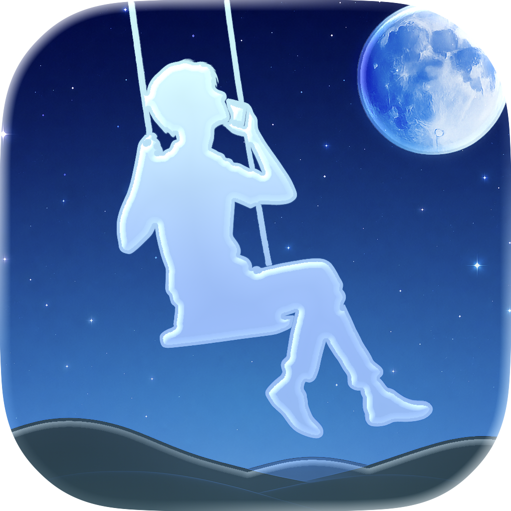
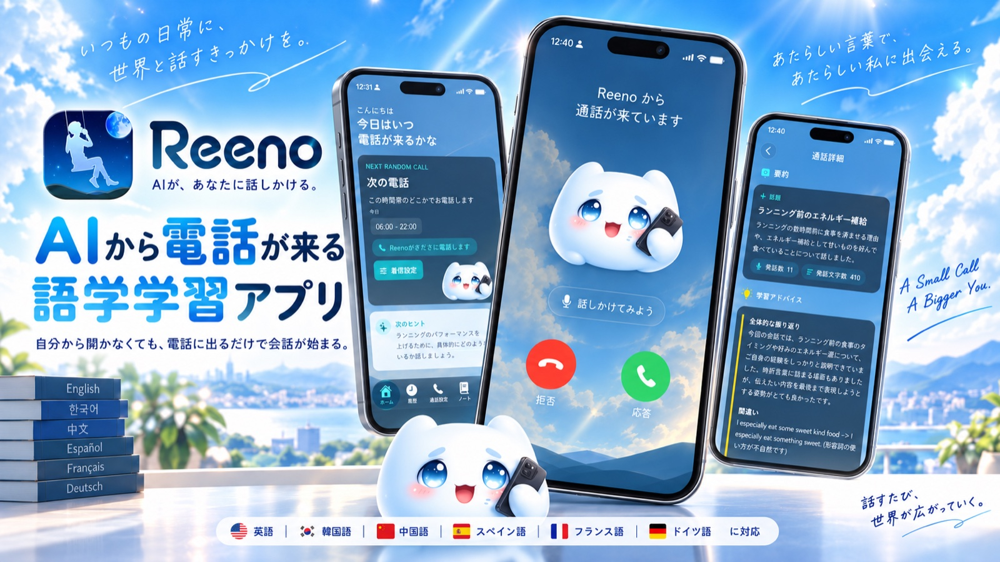
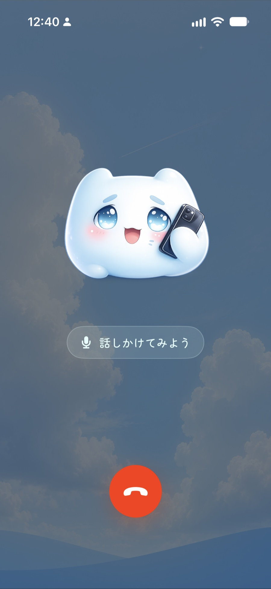
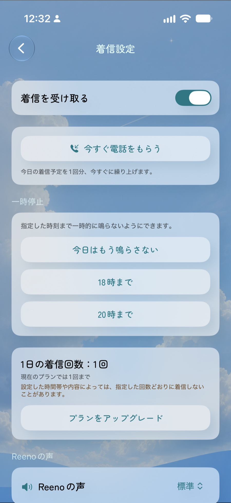
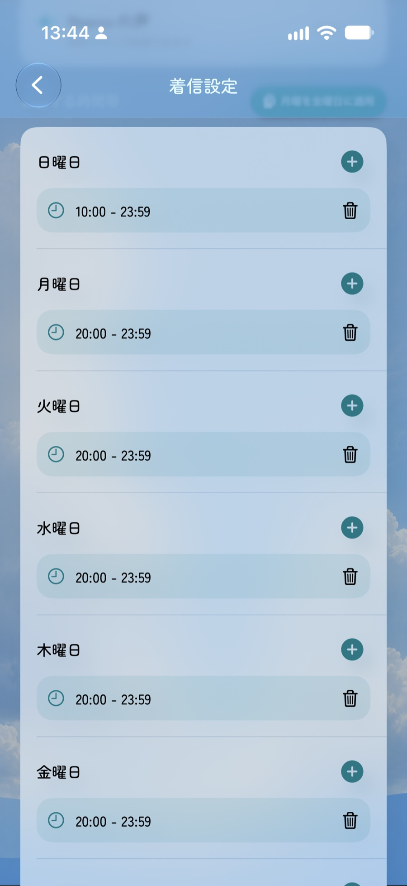
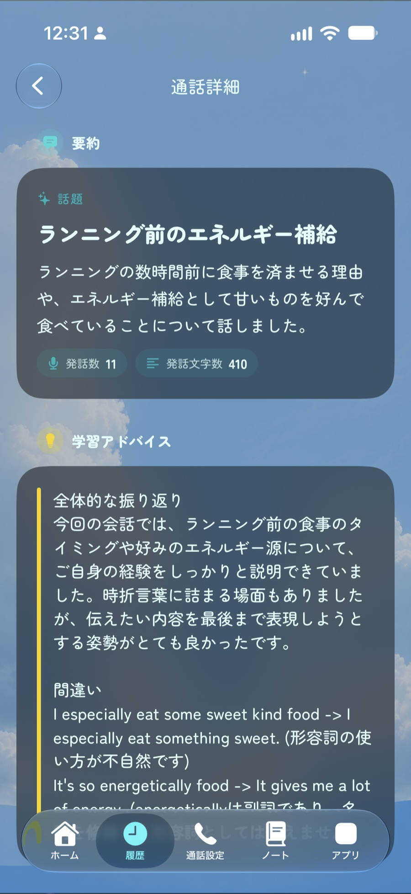
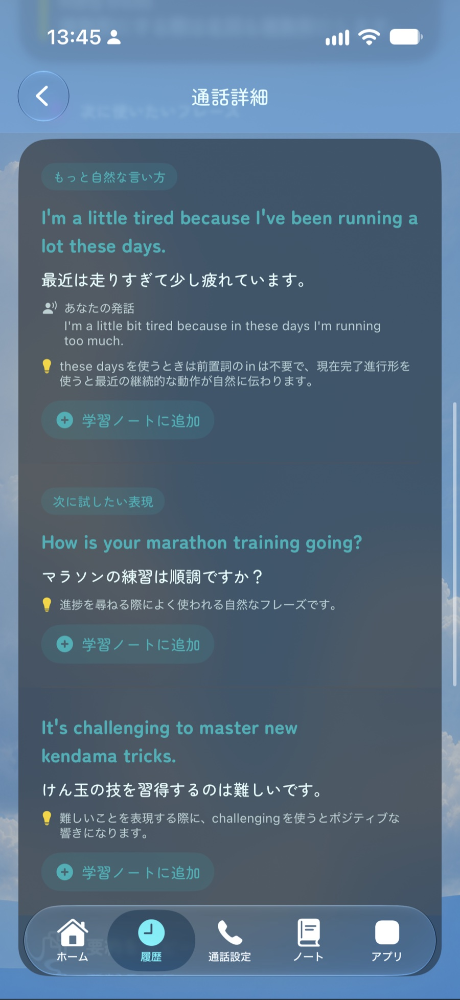

AIが、あなたに話しかける。
Reeno
自分からアプリを開かなくても、AIからの着信が外国語を話すきっかけに。会話を重ねるほど、あなたを理解するAIへ。

AIから電話がかかってくる語学学習
語学学習アプリをダウンロードしたものの、いつの間にか開かなくなっていた。Reenoは、そんな「続けられない」という壁に、AIの方から電話をかけるという発想でアプローチします。
ユーザーがAIを呼び出すのではなく、AIから着信が届く。電話に出るだけで会話が始まり、日常の中に自然と外国語を話すきっかけをつくります。
Reenoの特徴
- 設定した時間帯に、AIから電話がかかってくる 着信を受け取りたい時間帯を設定すると、その時間帯の中でAIから電話がかかってきます。「今すぐ電話をもらう」こともできます。
- 会話を重ねるほど、あなたのことを理解していく これまでの会話やユーザーについての情報を踏まえ、継続した文脈のあるコミュニケーションにつなげます。
- 通話したあとも、会話を振り返れる 通話後に会話内容の要約や学習アドバイスを確認できます。実際に話した内容を、その日のうちに次の学習へつなげられます。
- 英語だけでなく、6言語に対応 英語・韓国語・中国語・スペイン語・フランス語・ドイツ語のスピーキング練習に利用できます。
電話がかかってくる
実際に話す
振り返る
自分から始めなくても、続けられる学習体験を。
GALLERY






最初の7日間は無料継続利用には有料プランがあります。
App StoreでReenoを見るDEVELOPER
-
長田 公喜（Koki Osada）
iOSアプリの企画・開発・運営を行う個人開発者。東北大学卒業後、医師として大学病院に勤務しながら、医療機器ソフトウェアを含むiOSアプリの開発も行っています。
Email: osadab6mb@gmail.com
Twitter: @math1729abc
-